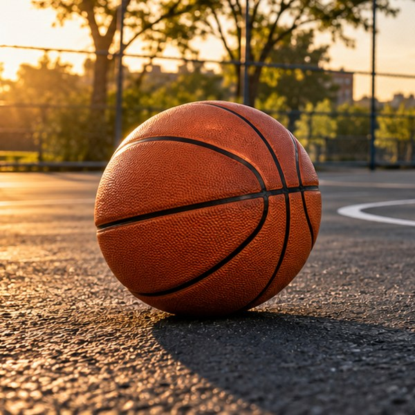

More Than a Game

Basketball is one of my favourite ways to spend time outside. A ball, a hoop and a little space are enough to start practising. Some days are about shooting around on my own. Other days, a casual game is a chance to meet up with people and enjoy being on the court. There is always something to work on, whether it is controlling a dribble, finding a teammate or getting more comfortable with a shot.
A good session does not have to be complicated. Starting close to the basket helps build a steady shooting motion before moving farther away. Practising with both hands makes dribbling feel more natural. Passing and moving into open space can make a game flow better than trying to do everything alone. Small improvements add up when you keep coming back and paying attention to the basics.
What I like about an outdoor court is how different each visit can feel. The light changes, new people arrive and a quiet practice can turn into a friendly game. You do not have to be the best player to take part. Being willing to learn, share the ball and respect the people around you makes the experience better for everyone.
This page brings together the parts of basketball I enjoy: being active, getting outside and making time for a game. Whether you are just learning or already have a regular court, there is room to try something new. Grab a ball, find a safe place to play and enjoy the next shot.